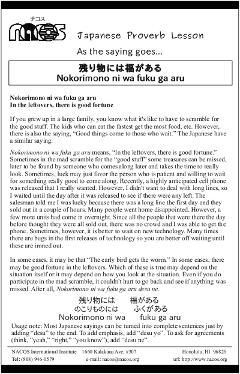

Nokorimono ni wa fuku ga aru
In the leftovers, there is good fortune
If you grew up in a large family, you know what it's like to have to scramble for the good stuff. The kids who can eat the fastest get the most food, etc. However, there is also the saying, “Good things come to those who wait.” The Japanese have a similar saying.
Nokorimono ni wa fuku ga aru means, “In the leftovers, there is good fortune.” Sometimes in the mad scramble for the “good stuff” some treasures can be missed, later to be found by someone who comes along later and takes the time to really look. Sometimes, luck may just favor the person who is patient and willing to wait for something really good to come along. Recently, a highly anticipated cell phone was released that I really wanted. However, I didn't want to deal with long lines, so I waited until the day after it was released to see if there were any left. The salesman told me I was lucky because there was a long line the first day and they sold out in a couple of hours. Many people went home disappointed. However, a few more units had come in overnight. Since all the people that were there the day before thought they were all sold out, there was no crowd and I was able to get the phone. Sometimes, however, it is better to wait on new technology. Many times there are bugs in the first releases of technology so you are better off waiting until these are ironed out.
In some cases, it may be that “The early bird gets the worm.” In some cases, there may be good fortune in the leftovers. Which of these is true may depend on the situation itself or it may depend on how you look at the situation. Even if you do participate in the mad scramble, it couldn't hurt to go back and see if anything was missed. After all, Nokorimono ni wa fuku ga aru desu ne.
Usage note: Most Japanese sayings can be turned into complete sentences just by adding “desu” to the end. To add emphasis, add “desu yo”. To ask for agreements (think, “yeah,” “right,” “you know”), add “desu ne”.

| © 1995-2013 NACOS International Institute. All Rights Reserved. |